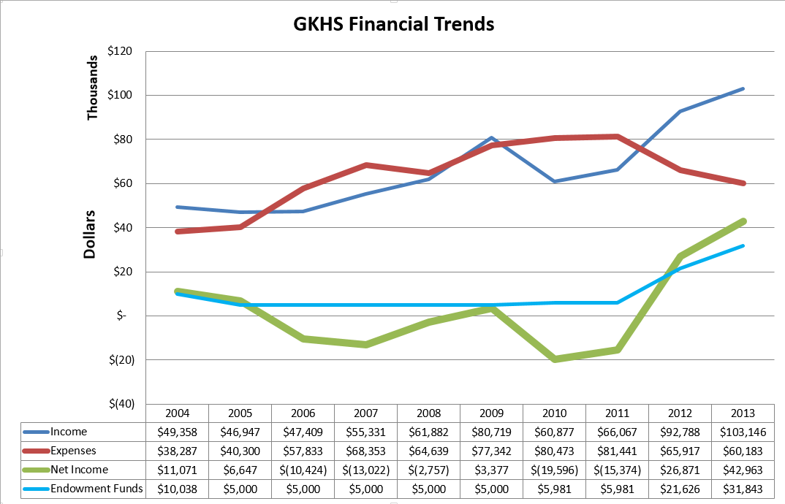
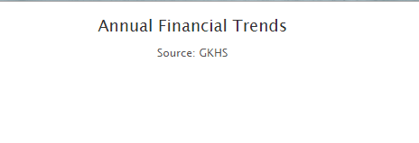
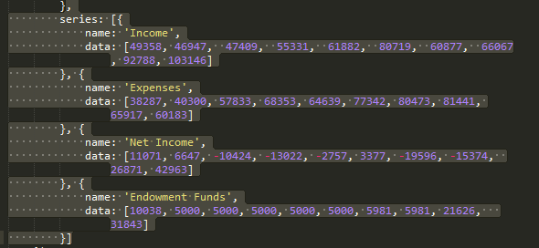
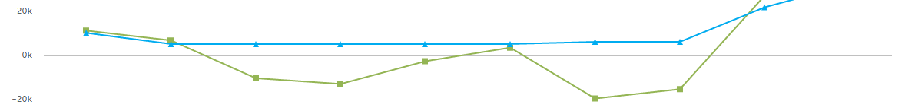
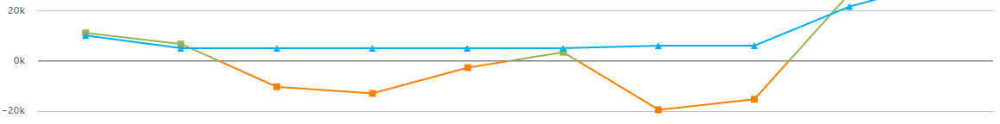

By: Allan Reitan (@AallnR)
Highcharts is a company that provides libraries which allow web developers to make three basic types of graphical inserts to their web pages.
They are:
NOTICE: These are demonstration files only. If you use these in regular projects please acquire the licensed version from Highcharts.
There are a couple of different methods to get the libraries for Highcharts products.
These examples are based on Highcharts version 4.0.4.
Prerequisites for Highcharts are jQuery version 1.8.2.
If you are not using jQuery in your project then you can easily address this matter by putting the following script reference in your web page header:
Copy all of the JavaScript Libraries into a web share that you will be working from.
For this example, I will demonstrate recreating this sample chart originally created with Microsoft Excel.

Since I am using the free version of the library I have experienced some issues whereby the property settings for plot background color were not adjustable. Not able to determine if this is a function of the free version versus the licensed copy.
Reference finished sample link
Looking through the API reference I found the following key settings that were going to be used.
The basic buildup of a chart object can be done without a dataset to attach to it.
Copy from a sample file here.
The JavaScript function works as an embedded script or can be encapsulated in a seperate JavaScript library of your own creation.
It will just show the title & subtitle fields (if they are populated). but will not show the axis, plot area, or legend.
Here is a sample of the empty chart:

Now we have a few options with populating the data on the chart:
You can easily append the Data Series to your blank chart when you create the object. Here is an example of the array that was manually added to create the GKHS sample:

Replace the above code sample with JSON Objects defined either as individual arrays, or any other generated JSON method.
Alternate way (method invoke): chart.addSeries(JSONObject Array).
Changing the color of the graphline for negative value numbers can be easily accomplished by setting the negativeColor property of the series.
In this example, let's change the negative color of the Net Income bar to Orange.
{
name: 'Net Income',
data: [11071, 6647, -10424, -13022, -2757, 3377, -19596, -15374, 26871, 42963],
negativeColor: '#fe8001'
}
Here is the original graph:

After applying the change in the negativeColor the results are:

The Highcharts library can be combined to make dashboards by combining the line chart with any of the other types of charting tools available.
More advanced applications of this library can include the 3-D image style graphs to make something more Sales & Marketing quality style in your web presentation.
Due to the modularity of this library, you can also use PHP or another server to serve up pre-populated JSON Objects to fill out a web page. This would allow you to create real time updating charts and graphs by having the server refresh the dataset that is being drawn on your basic web page.
Hope you have found this quick how-to-guide beneficial.